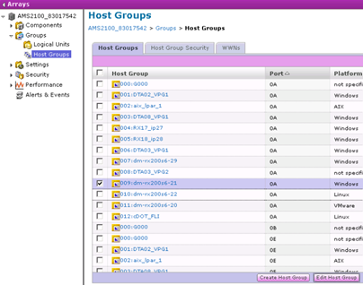
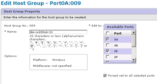
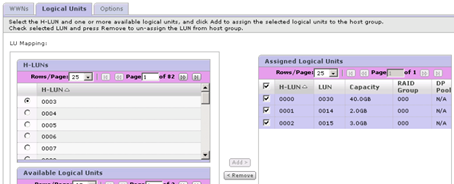

Demander de modifier un document
Demander de modifier un document Modifier sur GitHub
Modifier sur GitHub Guide des contributeurs
Guide des contributeurs
La version française est une traduction automatique. La version anglaise prévaut sur la française en cas de divergence.
Suppression des LUN source des hôtes
Contributeurs
La procédure suivante décrit la suppression des LUN source de votre hôte une fois la migration FLI terminée.

|
Cette tâche utilise un tableau HDS AMS2100 dans les exemples. Vos tâches peuvent être différentes si vous utilisez un tableau différent ou une version différente de l’interface graphique de la baie. |
Pour supprimer des LUN source de l’hôte, procédez comme suit :
Étapes
-
Connectez-vous à Hitachi Storage Navigator modulaire.
-
Sélectionnez l’hôte migré et sélectionnez Modifier le groupe d’hôtes.

-
Sélectionnez ports et sélectionnez Forced Set sur tous les ports sélectionnés.

-
Sélectionnez les LUN hôtes qui sont migrés à partir des LUN logiques attribués. Utilisez les noms de LUN pour chaque hôte mentionné dans la fiche LUN source. Sélectionnez ici les LUN de l’hôte Windows 2012 et sélectionnez Supprimer.

-
Répétez les étapes pour les hôtes Linux et VMware ESX.